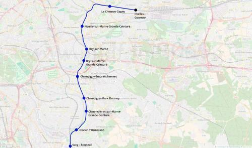
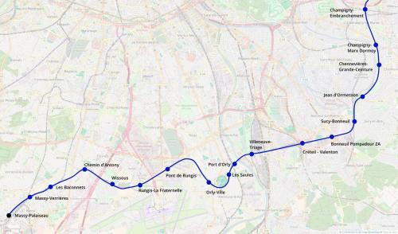

Tangentielle Val-de-Marne
Tangentielle Val-de-Marne
Chelles - Massy-Palaiseau
Une nouvelle tangentielle pour le réseau Île-de-France
La tangentielle Val-de-Marne est une proposition de réouverture au service voyageurs de la ligne de grande ceinture de Paris. Au départ de Chelles - Gournay, cette tangentielle relierait le Val-de-Marne à Massy-Palaiseau. Le tracé utiliserait la ligne de grande ceinture complémentaire. Il passerait par la branche ouest du triangle de Gagny puis desservirait Neuilly, Bry, Champigny et Chennevières-sur-Marne. Des correspondances avec le RER A seraient possible à Bry-sur-Marne et à Sucy-Bonneuil. Le tracé continuerait ensuite vers Valenton, Orly-Ville et Pont de Rungis.
À Pont de Rungis, un remaniement de la desserte serait effectué: les trains de la tangentielle continueraient vers Massy-Palaiseau par Chemin d'Antony tandis que les trains du RER C passeraient par Orly TGV en partageant les l'infrastructures du tronc commun du RER F entre Pont de Rungis et Chilly-Mazarin.
Cartes
{kind=link}

Cliquer pour agrandir
{kind=link}

Cliquer pour agrandir
Stations
Si ce projet vous intéresse n'hésitez pas à le (re-)partagez sur les réseaux sociaux ou par courriel ou à en parler autour de vous.
Si vous souhaitez travailler à la concrétisation de ce projet, passez à l'action et contactez nous.
Commenter